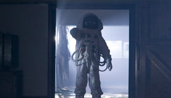

O Programa

A série de ficção científica de maior sucesso de todos os tempos acompanha as aventuras de um misterioso viajante do tempo que já salvou o universo diversas vezes.
Personagens e aparelhos

O 11º Doutor está de volta, na TARDIS com Amy Pond e seu novo marido Rory – e há outro encontro com a intrigante River Song.
Monstros e Vilões
O Doutor sempre teve inimigos. Conheça as criaturas extraordinárias já enfrentadas por ele e saiba que novas ameaças o aguardam.
Guia de Episódios
Descubra o que o Doutor, Amy e Rory têm pela frente ao enfrentar novos perigos, encontrar velhos amigos e ter seus relacionamentos testados ao limite.
Extras
Baixe fundos de tela e veja imagens dos personagens e dos episódios desta temporada de Doctor Who.